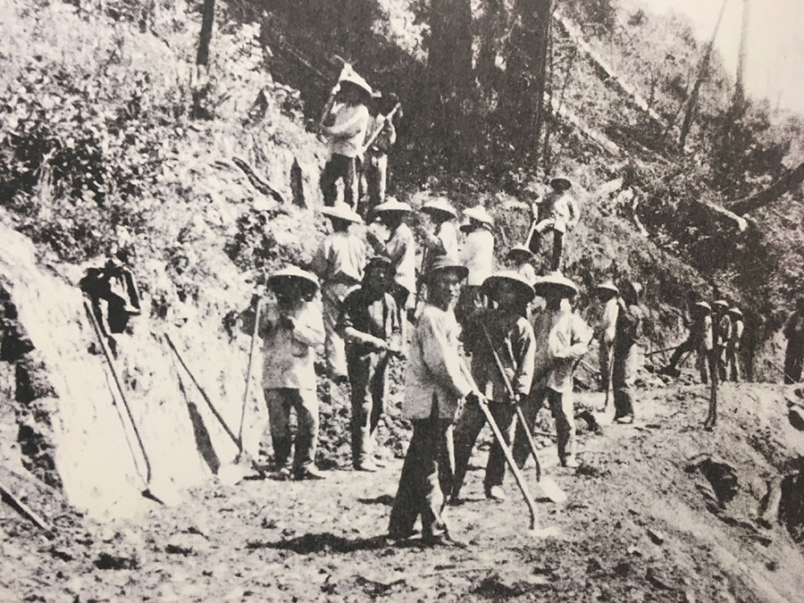
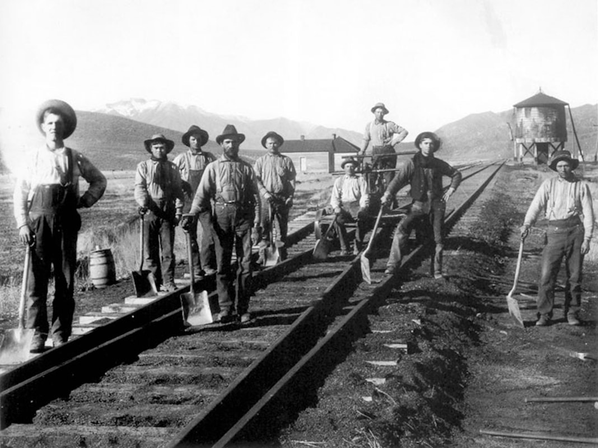

Above: Nicknamed Little Josie, the San Jose was the first engine built for the San Francisco and San Jose Railroad in 1862. She is seen here as one of the first locomotives servicing Sonoma County for the San Francisco and North Pacific Railroad, with the Santa Rosa Planing Mill on Wilson St. in the background, c. 1871. (Sonoma County Library)
The Iron Horse
© 2020 Hannah Clayborn All Rights Reserved
|
The Iron Horse certainly did not gallop to Healdsburg. At one time, in fact, it seemed that it would never get here at all. Ever since Charles Minturn, previously known as the Ferryboat King, opened his three-mile Petaluma and Haystack Railroad on August 1, 1864, Healdsburg had buzzed with the possibility of a railroad of their own. For years all they got were paper railroads.
Like real estate speculation and banking, railroad building offered the lure of a fast fortune. That is why so many local entrepreneurs made a bid to be the Railroad King of Sonoma County. In October 1865, C. W. Langdon of Santa Rosa, I. G. Wickersham of Petaluma, and John McMannis, a merchant from Healdsburg, organized the Petaluma and Healdsburg Railroad Company. Singly or collectively, however, these men could not raise enough capital to buy a locomotive. The project ended in mutual recriminations.(1) Public opinion was divided as to what route such a railway should take. Although most Sonoma County residents agreed that Healdsburg was a natural northern terminus, Petaluma and Vallejo were in direct competition for a rail route. To insure a profitable outcome, a group of Petalumans adopted a charter for a company to build a railroad to Healdsburg, with a spur to Bloomfield (in western Sonoma County), on December 26, 1867. They called their enterprise the Sonoma County Railroad Company. Infamous lawyer, politician, land baron, real estate speculator, and banker, John Frisbie, who had interests both in Vallejo and Healdsburg, organized a rival company soon after.(2) Frisbie’s Vallejo - Sonoma- Santa Rosa route would bypass Petaluma completely. He was joined in this enterprise by Jackson Temple, the pre-eminent lawyer of Santa Rosa and one of California's most powerful Democratic party operatives.(3) A third company, the San Francisco and Humboldt Bay Railroad Company, was incorporated by Utah mine owner, General Patrick O'Conner on March 2, 1868. The last was the most ambitious of the three companies. O'Conner, along with partners, Fred McCrellish, publisher of the San Francisco Daily Alta California newspaper, and John McCauley, a promoter and lobbyist, envisioned a route from Sausalito to Humboldt Bay. They incorporated the company for $8,600,000, a staggering figure at the time. Sonoma County Votes for Petaluma
All three companies expected to receive a subsidy of $5,000 per mile from the County coffers. To solve the dilemma the State Legislature decreed that the voters would decide which company received the subsidy, and thus a colorful campaign had begun. Each company immediately accused the other of knavery and every town in Sonoma County held boisterous rallies with impassioned public speakers.(4) The new owner of the Healdsburg Democratic Standard newspaper, W. J. Bowman, came out in favor of the Vallejo route endorsed by Frisbie in April 1868. The previous owners of the newspaper had endorsed the Petaluma route.(5) John Frisbie owned a great deal of land around Healdsburg and was a principal landowner and litigant in the famous Healdsburg Squatters Wars of the late 1850s and early 1860s.(6) The newspaper editor reasoned that Frisbie's route through Vallejo could connect to many more lines in other parts of the state and they accused the Petaluma supporters of sending their cheerleaders to Healdsburg to influence local opinion.(7) At the special election on May 12, 1868, both Santa Rosa and Healdsburg turned in large majorities for Frisbie's company, but the overall County vote (2095 to 1586) favored the Sonoma County Railroad, via Petaluma. But, as long as a railroad—any railroad—came to Healdsburg, locals were relatively content. Triumphant Petaluma held a ground breaking ceremony for the Sonoma County Railroad Company on its main street on July 4th, but that was the beginning, and end, of construction. Unable to carry out their directive as promised, the Petaluma group soon transferred all their rights and subsidies to General O'Conner and the San Francisco and Humboldt Bay Railroad Company. Yet even General O'Conner and his partners did not have all the cash that was needed for such a large project. They got that cash from a man named Asbury Harpending, Jr.
Harpending’s Midas Touch
Asbury Harpending seemed to have a knack for making money. As a 16-year old Kentuckian en route to California with five dollars in his pockets in 1857, he managed to make several hundred dollars on board ship by auctioning off the purser's fruit supply. Thus he arrived in San Francisco with a respectable stake. Soon after that Harpending took over a claim that several experienced gold miners had abandoned as worthless. Blessed with the Midas Touch, Harpending dug a little deeper, and struck gold. During the Civil War Harpending spent much time and money plotting to make California a Confederate state. Frustrated in these plans, he went East, served for a short time at Shiloh, and was given a naval captain's command by Jefferson Davis. Harpending ended up as a prisoner on Alcatraz after being apprehended on a recently purchased Confederate cruiser on San Francisco Bay. Upon his release he was broke, and fearing rearrest, hid out in the Sierra foothills near Fresno. Here he struck another gold mine, netting $800,000. Harpending was busy buying up land parcels for the extension of Montgomery Street across Market with banker William Ralston in 1868 when he was approached by Fred McCrellish of the San Francisco and Humboldt Bay Railroad Company. The enthusiastic young Harpending quickly bought out General O'Conner and John McCauley's interests, and became owner of 90% of the company. McCrellish was retained as a lobbyist for the project. With visions of Congressional land grants through the Eel River redwoods, Harpending soon began construction of the rails. He sent General O'Conner to Washington to lobby for the grants and, ever the visionary, set to work planning a suspension bridge across the Golden Gate. Grading proceeded north of Petaluma through the fall and winter of 1868, but by early 1869 even Harpending was running short of cash. Some Healdsburg citizens, suspicious of any project emanating from Petaluma, belittled the construction as earth scratching… a vaccination to ward off a railroad.(8) Healdsburg’s Progressive Republican newspaper, the Russian River Flag, supported Harpending's company, predicting in its December 3, 1868, issue that: The coming of railroads [the newspaper expected two lines to be put through to Healdsburg] will open up to us a market for our inexhaustible supplies of white, black, and live oak, madronia, manzanita, laurel, pepperwood, fir, redwood, and other timber, thereby giving employment to a greatly increased population. Our people will be encouraged to enter more largely into grape culture for shipment to the older states, and every business and branch of industry will be quickened by the coming of the iron horses.
The Land Went to Shills
The rails had nearly reached Santa Rosa when, in order to raise cash, Harpending and Ralston held a disastrous auction of the Montgomery Street lands. Setting the minimum bid too high, the land went to shills that had been planted by the owners. A few days later construction of the railroad in Sonoma County came to a halt. When the Petaluma group had turned over the rights of the Sonoma County Railroad Company to the San Francisco and Humboldt Bay line in 1868, they stipulated that the S. F. H. B. must have 10 miles of track laid by November 16, 1869, or rights would revert to the original holders. Further misfortune befell Harpending when he discovered that a ship carrying his railroad ties from England had been sunk in the harbor of Valparaiso, Chile.(9) Three days before the deadline, Harpending reorganized the company under the name, San Francisco and North Pacific Railroad. This allowed him to get another contract from the Petalumans. Still incorrigibly ambitious, Harpending was now considering a transcontinental railroad line and had secured control of another paper railway, the Oroville and Virginia City Railroad. He aimed to put a line through the North Fork of the Feather River (the Central Pacific, owned by the Big Four: Charles Crocker, Mark Hopkins, Collis P. Huntington, and Leland Stanford, had gone over the Sierras). Harpending's rival route did not please Central Pacific owners, who exerted pressure on Harpending through William Ralston, the financier who had bankrolled the Central Pacific. Whether Harpending could have succeeded with his transcontinental railroad scheme is a matter of historical conjecture. Ralston was able to persuade Harpending to sell his interests to Peter Donahue, who was already the owner of the San Francisco and San Jose Railroad.  Chinese workers played a large role in building the Transcontinental Railroad, as well as railroads in Sonoma County.
 Irish railroad crews competed for jobs with the Chinese workers in California. Here an Irish crew is seen in Utah, working on the Transcontinental Railroad.
Railroad Race becomes a Race War: Irish vs. Chinese
A few days before Harpending sold his interests to Donahue, in June 1870, Sonoma County voters had agreed to a subsidy of $5,000 per mile to the first railroad company to complete 10 miles of track, also agreeing to issue $25,000 in bonds to the California Pacific Railroad (which had already laid 163 miles of track in northern California) upon the completion of the first five miles from the Napa County line. Voters included a stipulation, however, that if the San Francisco and North Pacific railroad—or any other company—was able to complete a railway through the County first, no bonds would be issued to the California Pacific. New owner of the S. F. N. P., Colonel Peter Donahue, moved in with amazing speed, putting 100 workers on the line laying track. Unlike Harpending, Donahue refused to use Chinese laborers, employing instead crews of mostly Irish workers. Donahue had built up the enormous Union Iron Works from a tent foundry in San Francisco, where he had come to find gold in 1849. His foundry eventually turned out ships, mining machinery, cast building fronts, and locomotives. Now he had gone on to build the railways themselves. By September 1870, Petalumans actually rode on a working locomotive on Donahue's line. At the end of October a beautiful yellow passenger coach, with Lakeville emblazoned on its side, carried a cargo of Petalumans to Santa Rosa amidst a champagne-drenched party. Soon two more coaches arrived, the Santa Rosa and the Petaluma. Regular service between Petaluma and Santa Rosa began October 31, 1870. The terminus of the railroad line was a brand new town built by Colonel Donahue on Petaluma Creek, modestly christened Donahue Landing. Meanwhile the owners of the rival California Pacific were not the type of men to give up easily. With 100 Chinese laborers, they were busy laying track in an attempt to beat the S. F. N. P through the County. To best them, Donahue rushed more Irishmen to Santa Rosa. So the California Pacific added 200 more Chinese laborers. The race was on, and the California Pacific was soon covering a mile a day. All of Sonoma County cheered their favorite company and set wagers on their progress. Healdsburg's Russian River Flag newspaper, which backed Donahue as they had Harpending, glumly predicted the inevitability of a buy-out by the California Pacific, and ultimately by the Central Pacific, as early as October 6, 1870. Their prediction came true. Money Talks: the Race Is Over
Suddenly the race was over. Colonel Donahue had been convinced, once again by William Ralston, to sell out to Milton Slocumb Latham, owner of the California Pacific. Latham was one of the richest men in San Francisco, ex-governor, ex-senator, and head of the London and San Francisco Bank. Donahue, mindful that the California Pacific would always be a determined competitor, made a tidy profit on the sale on April 1, 1871. He was nobody’s fool. As part of the deal Donahue agreed to finish laying track to the Russian River using his own Irish work force. The S. F. N. P. now became the Petaluma and Humboldt division of the California Pacific. Making steady progress, the railway arrived in Windsor on March 1, 1871, to the Grant Avenue stop below Healdsburg on April 10, 1871, and on June 24, 1871, the first train, consisting of a baggage car, smoking car, and two coaches arrived in Healdsburg. The line was officially opened to Healdsburg on July 1, 1871, but oddly, no town celebration marked the long awaited and endlessly discussed arrival of the Iron Horse. A $23,000 Howe Truss railroad bridge was completed over the Russian River in the fall of 1871, and a permanent depot building costing about $7,000 was completed by January 18, 1872. The depot consisted of a sitting room for ladies, another sitting room for gentlemen, baggage room, telegraph office, and a large freight room.(10) Big Four Take Over
As the prescient Russian River Flag had predicted, Milton Latham soon relinquished control of the California Pacific line to the Central Pacific Big Four in September 1871. In a rush to complete the line and win the County subsidy by the June 21, 1872, deadline, Central Pacific opened passenger service to Cloverdale on March 15, 1872. J. G. Dow, a Healdsburg pioneer and the first man to open the wagon road to Cloverdale in 1849, was a prominent passenger aboard that first train. The Sonoma County Supervisors were also aboard. It was their job to inspect the railroad before awarding the County subsidy of $5,000 per mile.(11) Sonoma County residents may have been thoroughly confounded when, after going to such lengths to get it, the Central Pacific Big Four soon decided that the Sonoma County line would not figure in their long-range plans. Only Governor Leland Stanford showed an interest. By January 1873 the line was purchased for one million dollars by none other than—Colonel Peter Donahue! We may never discover all the intricacies of power politics and big money that went into the construction of the railroad to Healdsburg. But under any name or owner, the important thing to residents was that they now had a railroad. Some towns were not so lucky. The once thriving stagecoach stop town of Bloomfield in western Sonoma County, which had long been promised a spur line, was left out of the system completely, even by the narrow gauge. Its industry thereby dwindled and all but disappeared.(12) Aside from the powerful political maneuvering involved, there was at least one other negative impact of the railroad's arrival in the North County, the impact on public safety. By 1891 some local children enjoyed the sport of jumping on and off moving trains, much to their parents' horror, and the town had its share of tragic railroad accidents: cars and wagons hit at crossings; train wrecks and derailments; people caught unawares while crossing the railroad bridge on foot.(13) Northwestern Pacific Railroad
The terminus of the S. F. & N. P. at Donahue Landing flourished for 14 years and included a roundhouse and turntable, depot, repair and carpenter shops, hotel, saloon, school house, two laundries, combined stable and dance hall, and dwellings. Steamers from San Francisco would dock there and transfer passengers to the rail line headed north. When S. F. & N. P.’s new line from Petaluma to Tiburon Point was completed in 1884, the turntable and facilities were dismantled and moved to Tiburon. Only two buildings, the stable and a house, remain at Donahue Landing. The line that came to be known as the Northwestern Pacific Railroad was extended later to Sausalito. A passenger and freight depot was added to the Windsor stop in 1886, and at the Lytton and Geyserville stops in 1891. It stretched north to Ukiah in 1889, and by 1914, to Eureka.(14) Northwestern Pacific built a new depot building in Healdsburg in the summer of 1928. Santa Rosa builder, A.M. Hildebrandt, acted as contractor for this building which is still standing.(15) It did not seem that the utility of the railroad was ever doubted. Even when the iron road was in decline in the late 1920s, due to the increase in automobiles, local editorials stressed the importance of railroads to the North County's industry, progress, and prosperity.(16) Some citizens were disappointed that Healdsburg never became attached to some of the other electric and steam rail lines in the County. Dispute with Dry Creek Ranchers
To serve the many lumber mills, a coastal railway was built from Albion to the mill at Wendling (now Navarro on Highway 128). Northwestern Pacific Railroad officials also proposed a line to connect with it from Healdsburg, through Dry Creek Valley, on up Dry Creek to the point of junction of Highway 128, through Booneville, and on to Navarro. Although some preparatory work was done in the 1880s and 1890s, including surveys and purchase of right-of-ways, various financial and other difficulties stood in the way. Among those difficulties were landowners in Dry Creek Valley. As surveyed, the proposed railway would have bisected most of the farms that it crossed. These agriculturalists, owners of prime and fertile land, were outraged that they might have to travel a half mile or so down the road to a crossing in order to reach their own land. They sued the railroad over the dispute and received settlements. Railroad officials were so angered that they refused for many years to sell back the right-of-ways that they had purchased. Most of the Dry Creek farmers had to wait until the 1940s to negotiate for the return of those parcels of land. Healdsburg also missed out on the electric interurban railway system that linked Petaluma, Santa Rosa, and Sebastopol in the early years of this century. In 1914 such a railway was proposed to the Healdsburg City Trustees by the Healdsburg Electric Railway Company. This line would have been laid in the center of the main thoroughfare, West Street, out to Dry Creek Road, and then up Dry Creek Valley to intersect the road from Geyserville to Skaggs Springs. Yet by the time this proposal was made, the parent company, the Petaluma and Santa Rosa Electric Railway, was beginning to experience money problems. It never extended the line to Healdsburg.(17) Endnotes
1. Unless otherwise noted, the source of information for the section The Iron Horse is Gilbert H. Kneiss, Redwood Railways; a History of the Northwestern Pacific Railroad and Predecessor Lines (Berkeley: Howell North Co., 1956). 2. John B. Frisbie came to California as a captain in one of the companies in General Stevenson's regiment. Previously, in New York, Frisbie had been a lawyer, politician, and militia officer. Soon after coming with the military to Sonoma, Frisbie was an unsuccessful candidate for Lieutenant Governor of California in 1849. He married one of Gen. M. G. Vallejo's daughters and took up residence in the town of Vallejo where he became a prominent businessman. Along with brothers, Levi Frisbie and Dr. Edward G. Frisbie, he amassed a great deal of wealth and land through real estate speculation in Solano, Sonoma, and Shasta Counties. He sent the first cargo of wheat to Europe in 1860, and in 1867 was a member of the Legislature. Aside from his railroad and real estate activities he also served as president of a bank. He and his brother, Levi, were major protagonists in the Healdsburg Land Wars of 1858–1864. He lost his fortune in 1880 and moved with his family to Mexico where he engaged in mining operations. Bancroft, History of California, Vol. 20, pg. 750. Memorial and Biographical History of Northern California, 1891, pgs. 249, 311, 312. Bay of San Francisco, Vol. 1 pg. 500. 3. Russian River Flag 29 April 1868 (2:1). Democratic Standard 11 April 1868 (4:1). Clayborn, Hannah M., A Promised Land: Grantees, Squatters, and Speculators in the Healdsburg Land Wars, (M.A. Thesis, History, Sonoma State University, 1990.). LeBaron, Gaye, Santa Rosa, a Nineteenth Century Town, pg. 40. 4. Democratic Standard 2 May 1868 (4:3); 9 May 1868 (1:2). 5. Democratic Standard 11 April 1868 (4:1). 6. Clayborn, Hannah M., A Promised Land: Grantees, Squatters, and Speculators in the Healdsburg Land Wars, (M.A. Thesis, History, Sonoma State University, 1990. 7. Democratic Standard 18 April 1868 (1:1) and (4:1); 2 May 1868 (4:3); 9 May 1868 (1:2). Russian River Flag 29 April 1869 (2:1). 8. Russian River Flag 19 Nov. 1868 (2:3); 3 Dec. 1868 (2:2). 9. LeBaron, Gaye, Santa Rosa, a Nineteenth Century Town, pg. 41. 10. Tribune Diamond Jubilee Edition, 26 Aug. 1940, p. 11. Russian River Flag 24 June 1871 (3:3); 7 September 1871 ; 18 Jan. 1872 (3:2); 28 March 1872 (2:3). 11. Tribune Diamond Jubilee Edition, 26 Aug., 1940, p. 11. Russian River Flag 21 March 1872 (2:1); 28 March 1872 (2); 11 April 1872 (3:1). 12. Clayborn, Hannah M., Dirt Roads and Dusty Tales: A Bicentennial History of Bloomfield, California (Santa Rosa: Cleone Publishing, 1993). 13. Tribune 2 April 1891 (3:4). Enterprise 9 June 1917 (8:3). Sotoyome Scimitar 20 Sept. 1928 (1:3). 14. Tribune Diamond Jubilee Edition, 26 Aug. 1940, p. 11. 15. Enterprise 23 Feb. 1928 (1:3); 31 May 1928 (1;6); 19 July 1928 (1:3). Sotoyome Scimitar, 26 July 1928 (1:5). 16. Enterprise 3 Jan. 1929 (4:1). 17. Pat Schmidt, "Dry Creek Express", in Russian River Recorder, Spring, 1987, Issue 32, p. 5. Tribune 11 May 1898; 28 May 1898; 12 Dec. 1902; 18 June 1904; 16 July 1914; 20 August 1914. Dr. Dennis Harris, "Preserving an Example of Railroad History in Sebastopol", in The Journal of the Sonoma county Historical Society, 1991 No. 3, p. 4-7. |